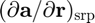
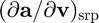
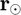
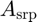
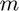
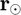
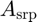
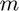

dadX_srp
Partial derivatives of solar radiation pressure acceleration with respect to position and inertial velocity.
Back to Aerospace Simulation Toolbox Contents.
Contents
Syntax
[dadr_srp,dadv_srp] = dadX_srp(r,r_sun,CR,Asrp,m)
Description
[dadr_srp,dadv_srp] = dadX_srp(r,r_sun,CR,Asrp,m) determines the partial derivatives of the solar radiation pressure acceleration with respect to position () and inertial velocity () given the satellite position ( ), Sun position (), coefficient of reflectivity (), SRP reference area (), and satellite mass ().
), Sun position (), coefficient of reflectivity (), SRP reference area (), and satellite mass ().
Input/Output Parameters
| Variable | Symbol | Description | Format | Units | |
| Input | r | satellite position | 3×1 double |
m | |
| r_sun | Sun position | 3×1 double |
m | ||
| CR | coefficient of reflectivity | 1×1 double |
- | ||
| A_srp | SRP reference area | 1×1 double |
m2 | ||
| m | mass | 1×1 double |
kg | ||
| Output | dadr_srp | partial derivative of solar radiation pressure acceleration with respect to position | 3×3 double |
s-2 | |
| dadv_srp | partial derivative of solar radiation pressure acceleration with respect to inertial velocity | 3×3 double |
s-1 |
Note
and must be resolved in the same coordinate frame.